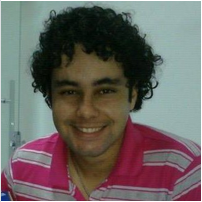

|  |
Hudson Lima |
|
Brasileiro, solteiro, 24 anos Rua Lourdes Gonçalves Santos, N.º 229 Costa Rios – Pouso Alegre – MG Telefone: (35) 9855-3111 / E-mail: hudsonlima_@hotmail.com |
Objetivo |
| Atuar ná area de desenvolvimento |
Qualificação |
| 2015 - 2017 Desenvolvimento de Aplicações para Dispositivos Móveis e Cloud Computing - INATEL 2009 - 2013 Bacharel em Sistemas de Informacao - UNIVAS |
Experiencia |
| 2014 (atual) Programador FiveWin - Av Info Sistemas 2011 - 2014 Programador C# - 4Life Sistemas e Solucoes |